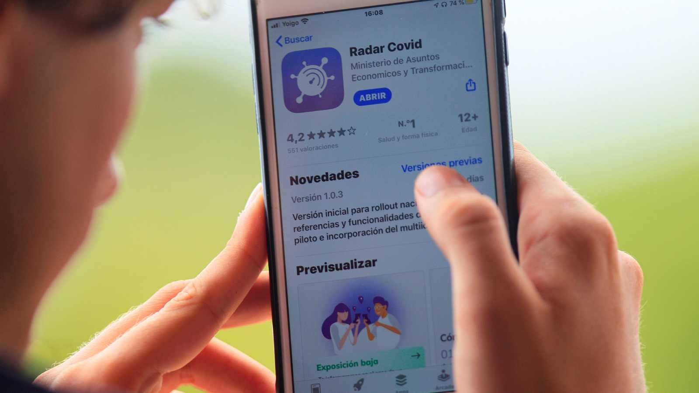
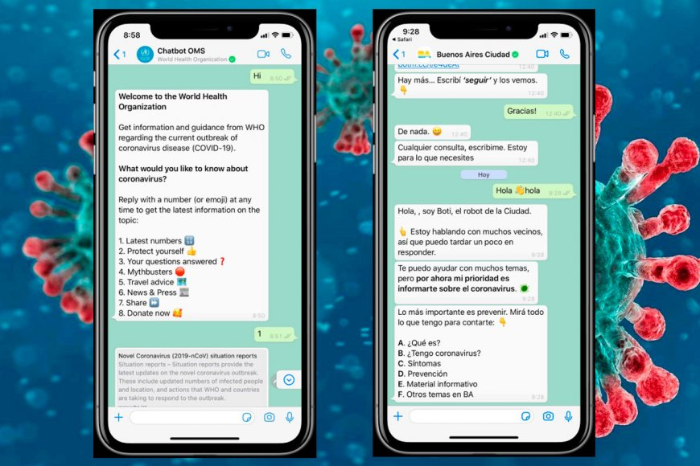

Desde mediados de abril, 191 países han anunciado o aplicado el cierre de escuelas o universidades, lo que ha afectado a 1570 millones de estudiantes. Muchas instituciones educativas comenzaron a ofrecer cursos en línea para garantizar que la formación no se viera interrumpida por las medidas de cuarentena. Las tecnologías involucradas en la formación a distancia son similares a las del trabajo remoto y también incluyen realidad virtual, realidad aumentada, impresión 3D y profesores-robot con inteligencia artificial.
Muchas compañías han solicitado a sus empleados que trabajen desde casa . El trabajo remoto es posible gracias a tecnologías que incluyen redes privadas virtuales (VPN), protocolos de voz sobre Internet (VoIP), reuniones virtuales, tecnología en la nube, herramientas de colaboración profesional e incluso tecnologías de reconocimiento facial que permiten que una persona aparezca ante un fondo virtual para preservar la privacidad de su vivienda. Además de evitar la propagación del virus, el trabajo remoto también ahorra tiempo de viaje y ofrece más flexibilidad.
Aunque las medidas de cuarentena han reducido significativamente las interacciones personales, la creatividad humana ha llevado la fiesta a internet. Las fiestas en la nube y la transmisión en línea de conciertos han ganado popularidad en todo el mundo. Compañías de producción cinematográfica chinas también han lanzado películas en línea. Los museos y los sitios del patrimonio internacional ofrecen visitas virtuales. También se ha producido un aumento del tráfico de juegos en línea, a partir del brote de la enfermedad.
Radar COVID es la aplicación diseñada y dirigida por la Secretaría de Estado de Digitalización e Inteligencia Artificial del Gobierno de España para ayudar a evitar la propagación del coronavirus (COVID-19). Radar COVID te avisa de manera anónima del posible contacto que has podido tener en los últimos 14 días con una persona que haya resultado infectada utilizando la tecnología Bluetooth de bajo consumo.
La OMS (Organización Mundial de la Salud) ha lanzado el ‘chatbot’ WHO con el fin de proporcionar información sobre el nuevo coronavirus y ofrecer respuesta a los usuarios sobre preguntas habituales relacionadas con la enfermedad, como las cuáles son las tasas actuales de infección o cómo pueden protegerse. El ‘bot’ funciona de forma sencilla: no responde al lenguaje natural. Por tanto, los usuarios deben enviarle números o ‘emojis’ para obtener más información sobre los diferentes temas (por ejemplo, si quieren saber las últimas cifras sobre el virus deben marcar el 1, o si necesitan consejos sobre viajes deben marcar el 5).
